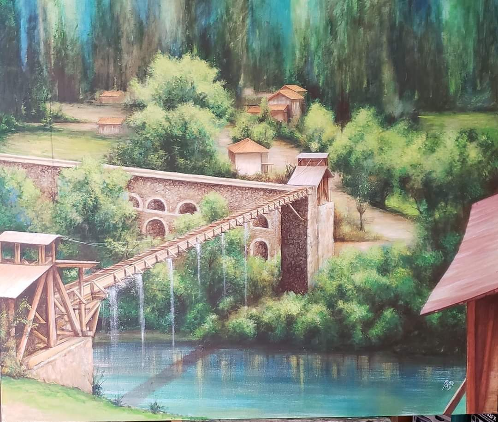

Es una estructura hidráulica que data quizás de la época prehispánica y colonial. Estos sistemas utilizados para el transporte de agua por gravedad es una galería que cuenta con miles de años de existencia, tiempo durante el cual han sido usados para la derivación de agua para su aprovechamiento agrícola, a estas obras se les conoce como sistemas de riego pequeños.
Según estudios sobre este tipo de sistemas nos han demostrado que tienen un alto grado de sostenibilidad, bajos costos económicos y altos rendimientos de producción agrícola, pudiéndose considerar como una importante alternativa en la generación de desarrollo.
Hacia llegar el agua al otro lado del rio Sta. Bárbara, servía para transportar agua para riego, es un lugar por cierto privilegiado porque se encuentra en la parte alta de la cuenca del río Santa Bárbara desde donde se observa el serpenteante recorrido
El ancho del canal es de aproximadamente 1 metro paralelos al rio Guaymincay. Si al desbordarse el rio Guaymincay el agua se traslade por los arcos para evitar una inundación.